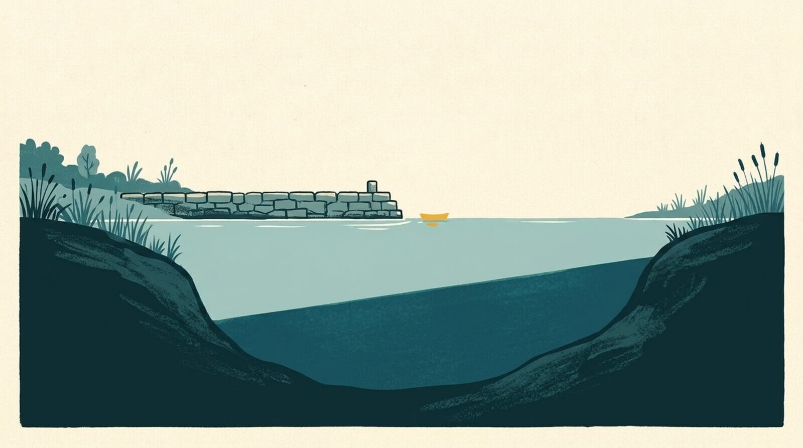

In breve
In estate la superficie del lago si scalda e si forma un termoclino: una zona di rapida transizione tra acqua superficiale e acqua profonda. Il vento può far inclinare questo confine: è una sessa interna. Sul Lemano, vicino alle rive, la sua ampiezza in profondità può raggiungere 10 metri, con spostamenti di 35 cm/s per 5-6 ore (Wikipedia).
Cosa succede in estate?
Il riscaldamento dell’acqua in superficie crea, a una profondità intermedia, un termoclino stabile: la zona di rapida transizione termica tra acque superficiali e acque profonde. Lo strato superiore si chiama epilimnio, quello inferiore ipolimnio.
Una sessa dentro il lago
Il vento che soffia sulla superficie fa inclinare questa interfaccia, il che si traduce in un’onda stazionaria, come quelle delle sesse di superficie. Poiché la differenza di densità è minore che tra aria e acqua, queste onde hanno un’ampiezza maggiore in profondità; arrivano in superficie molto attenuate. Vicino alle rive del Lemano l’ampiezza in profondità può raggiungere 10 m, associata per 5-6 ore a spostamenti di 35 cm/s nell’acqua.
Cosa può spiegare, e cosa non sappiamo
Quando il confine tra gli strati si inclina verso una riva, l’acqua di un altro strato può avvicinarsi: è una spiegazione plausibile dei cali bruschi di temperatura che i bagnanti segnalano dopo una raffica. Wikipedia non collega esplicitamente le sesse interne a queste esperienze, e non possiamo dire, spiaggia per spiaggia, quando accada. Il modello dell’app dà la temperatura a circa 70 cm, non una misura al minuto. Da leggere anche: i primi 90 secondi in acqua fredda.
Vento, temperatura dell’acqua e bise del momento, spiaggia per spiaggia, sono nell’app Il mio lago.
L’acqua del lago in questo momento
La temperatura dell’acqua di ogni spiaggia è nell’app Il mio lago, aggiornata ogni tre ore.